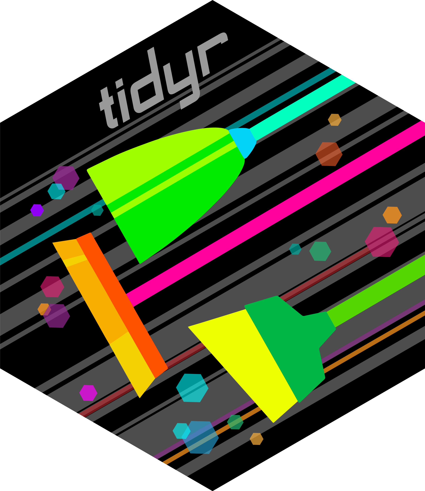
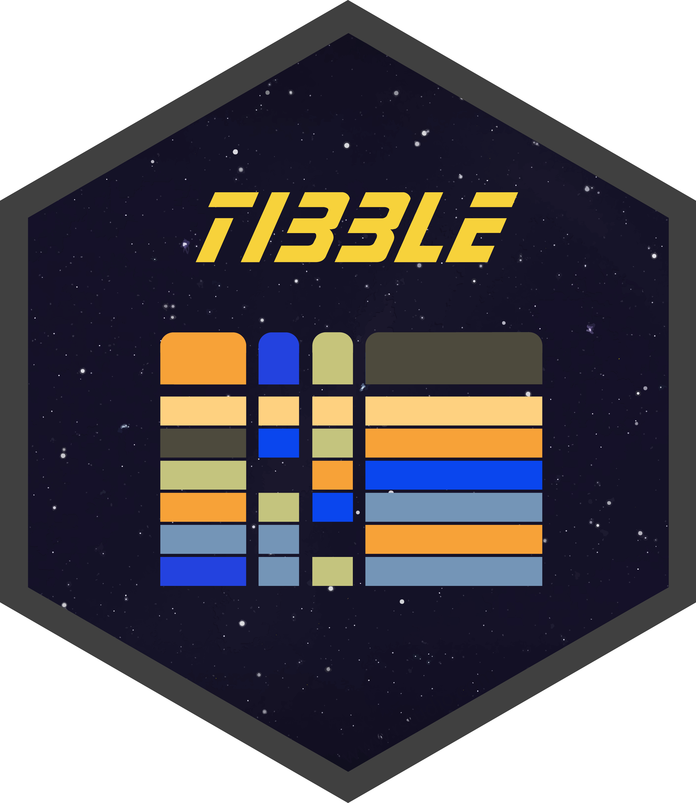

Sesión 2
Visualizaciones con ggplot2
Universidad El Bosque
4 de junio de 2026
Agenda
- Gramática de gráficas en capas
- Los datos que usaremos hoy: pingüinos de Palmer
- Geometrías: distribuciones, comparaciones, conteos, tendencias
aes(): mapear variables vs. fijar valores- Etiquetas con
labs() - Temas y personalización con
theme() - Paletas de colores
- Facetas:
facet_wrap()yfacet_grid() - Guardar figuras con
ggsave()
El universo tidyverse

Una sola línea carga 9 paquetes esenciales para el análisis de datos:
En lugar de cargar cada paquete por separado — como library(ggplot2) y library(dplyr) — tidyverse los agrupa todos. Durante el curso irás conociendo varios.







Parte 1
La gramática de las gráficas
ggplot2 y la gramática de capas
ggplot2 implementa la Grammar of Graphics de Wilkinson: una figura se construye sumando capas independientes.
Cambiar cualquier capa deja las demás intactas. Eso hace que el código sea modular y fácil de modificar.
Los datos del día: pingüinos de Palmer

palmerpenguins contiene medidas de 344 pingüinos de tres especies en la Antártida.
Instala el paquete:
Preparar los datos
penguins tiene algunos valores faltantes (NA). Los eliminamos antes de graficar.
library(palmerpenguins)
# vamos a sobreescribir el objeto original para trabajar solo con los datos limpios
pinguinos <- penguins
pinguinos <- drop_na(penguins)
glimpse(pinguinos)Rows: 333
Columns: 8
$ species <fct> Adelie, Adelie, Adelie, Adelie, Adelie, Adelie, Adel…
$ island <fct> Torgersen, Torgersen, Torgersen, Torgersen, Torgerse…
$ bill_length_mm <dbl> 39.1, 39.5, 40.3, 36.7, 39.3, 38.9, 39.2, 41.1, 38.6…
$ bill_depth_mm <dbl> 18.7, 17.4, 18.0, 19.3, 20.6, 17.8, 19.6, 17.6, 21.2…
$ flipper_length_mm <int> 181, 186, 195, 193, 190, 181, 195, 182, 191, 198, 18…
$ body_mass_g <int> 3750, 3800, 3250, 3450, 3650, 3625, 4675, 3200, 3800…
$ sex <fct> male, female, female, female, male, female, male, fe…
$ year <int> 2007, 2007, 2007, 2007, 2007, 2007, 2007, 2007, 2007…Parte 2
Geometrías
Dos familias de geometrías
Cada geom_*() pertenece a una de dos familias según cuántas variables necesita.
Una variable: ggplot2 calcula el resto
Solo defines x. La geometría resume los datos por ti.
x numérica: - geom_histogram(): distribución continua - geom_density(): curva de densidad suavizada
x categórica: - geom_bar(): contar por categoría
Dos variables: defines tanto x como y
y es siempre numérica. Lo que cambia es x:
xcategórica → comparar gruposgeom_boxplot(),geom_violin(),geom_jitter()xnumérica → ver relacionesgeom_point(),geom_smooth(),geom_line()
Una variable · x numérica o categórica
Distribuciones y conteos
geom_histogram(): distribución continua
x numérica. Divide los valores en intervalos y cuenta cuántas observaciones caen en cada uno.
bins fija el número de barras; binwidth fija el ancho de cada una. No uses ambos a la vez.
{kind=link}
geom_density(): curva de densidad
x numérica. Versión suavizada del histograma. Útil para comparar distribuciones entre grupos.
{kind=link}
geom_bar(): conteos por categoría
x categórica. Cuenta cuántas observaciones hay en cada grupo. Solo necesita x.
{kind=link}
Dos variables · x + y
Relaciones y comparaciones
x categórica: comparar grupos
Cuando x es una variable categórica (especie, tratamiento, grupo…), las geometrías comparan la distribución de y entre esos grupos.
geom_boxplot(): Mediana, cuartiles y valores extremos de y por cada nivel de x.
geom_violin(): Como boxplot, pero muestra la forma completa de la distribución.
geom_jitter(): Puntos individuales con pequeño desplazamiento aleatorio para evitar que los puntos se superpongan.
{kind=link}
geom_violin() + geom_jitter()
Combinar capas muestra la distribución completa y los datos individuales a la vez.
{kind=link}
Las capas se dibujan en orden: el violín primero, los puntos encima. Cambia el orden y verás la diferencia.
x numérica: ver relaciones
Cuando x también es numérica, el objetivo es ver cómo varía y a medida que cambia x.
geom_point(): El diagrama de dispersión clásico. Cada fila del dataframe es un punto. Lo exploraremos en profundidad en la siguiente sección.
geom_smooth(): Añade una línea de tendencia sobre los puntos.
geom_line(): Conecta los puntos en orden de x. Ideal para series de tiempo.
{kind=link}
geom_smooth(): línea de tendencia
Se superpone sobre geom_point(). El argumento method define el tipo de ajuste.
{kind=link}
method = "lm" ajusta una recta. method = "loess" ajusta una curva suave que sigue la tendencia en zonas de x. se = FALSE oculta el intervalo de confianza. Cámbialo por se = TRUE (o borra ese argumento) para mostrarlo.
geom_line(): series de tiempo
Conecta observaciones en orden de x. Apropiado cuando el orden importa.
{kind=link}
economics es un conjunto de datos de ggplot2 con indicadores económicos de EE.UU.
¿Qué geometría usar?
Algunas sugerencias, pero ¡siempre puedes experimentar!
| Función | x | y | Cuándo usarla |
|---|---|---|---|
geom_histogram() |
📏 numérica | — | Distribución de una variable continua |
geom_density() |
📏 numérica | — | Como histogram, suavizado; útil para comparar grupos |
geom_bar() |
📶 categórica | — | Contar observaciones por categoría |
geom_boxplot() |
📶 categórica | 📏 numérica | Comparar distribuciones entre grupos (mediana y rango) |
geom_violin() |
📶 categórica | 📏 numérica | Como boxplot, muestra la forma completa de la distribución |
geom_jitter() |
📶 categórica | 📏 numérica | Puntos individuales, evita solapamiento |
geom_point() |
📏 numérica | 📏 numérica | Relación entre dos variables numéricas (dispersión) |
geom_smooth() |
📏 numérica | 📏 numérica | Línea de tendencia sobre un diagrama de puntos |
geom_line() |
📆 tiempo / orden | 📏 numérica | Series de tiempo o datos ordenados |
¿Qué geometría usar?
ggplot2 tiene muchísimas geometrías más para distintos propósitos: mapas, gráficos de red, etc. Consulta la documentación oficial para verlas.


Actividad · 10 min
Tres figuras, tres geometrías
Con el dataset pinguinos, crea una figura de cada tipo:
- Distribución de una variable numérica (solo
x) - Comparación de una numérica entre grupos (
xcategórica +ynumérica) - Relación entre dos variables numéricas (
xyynuméricas)
Añade theme_minimal() y un título con labs().
Parte 3
aes(): mapear vs. fijar
Dentro de aes(): variable → estética
Cuando una estética depende de los datos, va dentro de aes().
{kind=link}
Cada especie recibe un color distinto según los datos.
Fuera de aes(): valor fijo para todos
Cuando la estética es un valor constante, va fuera de aes(), directamente en el geom_*().
{kind=link}
Todos los puntos tienen el mismo color, tamaño y transparencia.
El error más común con aes()
{kind=link}
aes(colour = "blue") crea una categoría llamada "blue" y le asigna el primer color de la paleta por defecto. Para fijar un color, escríbelo fuera de aes(): geom_point(colour = "blue").
Múltiples mappings en aes()
Se pueden mapear varias variables a distintas estéticas simultáneamente.
{kind=link}
Mapear colour y shape a la misma variable mejora la accesibilidad: la figura es legible incluso en escala de grises.
Actividad · 3 min
El reto del color rojo
Crea un scatterplot de bill_length_mm vs body_mass_g en pinguinos donde todos los puntos sean rojos.
- ¿Cómo lo harías?
Parte 4
Etiquetas con labs()
labs(): títulos y etiquetas
labs() controla todos los textos de la figura: título, subtítulo, ejes, leyenda y nota al pie.
ggplot(
pinguinos,
aes(
x = bill_length_mm,
y = body_mass_g,
colour = species
)
) +
geom_point(alpha = 0.7) +
scale_colour_viridis_d() +
labs(
title = "Masa corporal y longitud del pico",
subtitle = "Pingüinos de Palmer, Antártida",
x = "Longitud del pico (mm)",
y = "Masa corporal (g)",
colour = "Especie",
caption = "Datos: Horst, Hill & Gorman (2020)"
) +
theme_minimal(){kind=link}
Parte 5
Temas y personalización
Temas incorporados
ggplot2 incluye varios temas listos para usar.
Aplícalos sumándolos a la figura:
{kind=link}
Personalizar con theme()
theme() permite ajustar cualquier elemento visual de la figura.
{kind=link}
element_blank() elimina un elemento. element_text() controla fuente, tamaño y color. element_line() y element_rect() hacen lo propio con líneas y rectángulos.
Parte 6
Paletas de colores
scale_colour_*() y scale_fill_*()
Las funciones scale_*() controlan cómo se mapean los datos a las estéticas visuales.
# Viridis: perceptualmente uniforme, apto para daltonismo
scale_colour_viridis_d() # variable discreta
scale_colour_viridis_c() # variable continua
scale_colour_viridis_d(option = "plasma") # variante: magma, plasma, inferno, cividis
# ColorBrewer: paletas curadas para cartografía y visualización
scale_colour_brewer(palette = "Set2") # discreta
scale_fill_brewer(palette = "Blues") # continua
# Manual: colores definidos a mano
scale_colour_manual(values = c("#121834", "#225faa", "#ddeaf8"))Usa scale_colour_*() para estéticas colour= y scale_fill_*() para fill=. Algunas geoms tienen borde (colour) y relleno (fill); otras solo usan colour.
HEX es un formato de color que combina rojo, verde y azul en un código de 6 dígitos (precedido por #). Por ejemplo, #225faa es un azul específico. En Google busca “selector de color” para obtener el código HEX de cualquier color.
Comparación de paletas
Viridis
{kind=link}
ColorBrewer Set2
{kind=link}
Parte 7
Facetas
facet_wrap(): un panel por categoría
Divide la figura en paneles según los valores de una variable.
{kind=link}
facet_grid(): dos variables, filas y columnas
Organiza los paneles en una cuadrícula con una variable por eje.
{kind=link}
La sintaxis filas ~ columnas define qué variable va en cada dimensión.
Parte 8
Guardar figuras
ggsave()
Guarda la última figura generada (o la que especifiques) en el formato que elijas.
mi_figura <- ggplot(
pinguinos,
aes(x = bill_length_mm, y = body_mass_g,
colour = species, shape = species)
) +
geom_point(alpha = 0.7, size = 2) +
scale_colour_viridis_d() +
theme_minimal()
# PNG para presentaciones y web
ggsave("pinguinos.png",
plot = mi_figura,
width = 16, height = 10,
units = "cm", dpi = 300
)
# PDF para publicaciones (vectorial, escala sin pérdida)
ggsave("pinguinos.pdf",
plot = mi_figura,
width = 16, height = 10,
units = "cm"
)dpi = 300 es el estándar para publicación impresa. Para pantalla, dpi = 150 es suficiente. units = "cm" permite especificar el tamaño exacto que pedirá la revista.
Por ahora la figura se guarda en la misma carpeta donde está tu script (o en Documentos si no has guardado el script aún). En la Sesión 4 crearás un proyecto organizado con una estructura más clara.
La figura completa
Todo lo visto en una sola figura.
ggplot(pinguinos,
aes(x = bill_length_mm,
y = body_mass_g,
colour = species,
shape = species)) +
geom_point(alpha = 0.6, size = 2) +
geom_smooth(method = "lm",
se = FALSE,
linewidth = 0.8) +
facet_wrap(~island) +
scale_colour_brewer(name = "Especie",
palette = "Dark2") +
scale_shape_discrete(name = "Especie") +
labs(title = "Masa y pico por isla",
x = "Longitud del pico (mm)",
y = "Masa corporal (g)",
caption = "Datos: Horst et al. (2020)") +
theme_linedraw() +
theme(legend.position = "bottom"){kind=link}
Antes de terminar…
Quiz rápido
Quiz · 1 de 5
¿De qué color quedan los puntos con este código?
- Azul: le pasamos el texto
"blue"como color
- Azul: le pasamos el texto
- El primer color de la paleta por defecto de ggplot2
- Transparente: dentro de
aes()no se puede fijar un color
- Transparente: dentro de
- Rojo: siempre usa el primer color de la paleta activa
✓ b) aes(colour = "blue") crea una categoría llamada "blue" y le asigna el primer color de la paleta por defecto. Para fijar azul de verdad: geom_point(colour = "blue"), fuera de aes().
Quiz · 2 de 5
¿Qué función de escala Viridis completaría correctamente esta figura?
scale_colour_viridis_d():islandes categórica, pero el mapping escolour
scale_fill_viridis_c(): el mapping escolour, peroislandno es continua
scale_fill_viridis_d(): el mapping escoloureislandes categórica
scale_fill_viridis_b():_bes para variables continuas en intervalos
✓ c) Dos reglas: la función debe coincidir con la estética (colour → scale_colour_*), y el sufijo con el tipo de variable (island es categórica → _d).
Quiz · 3 de 5
¿Cuál es la diferencia principal entre geom_boxplot() y geom_violin()?
- Son idénticos: solo cambia la forma visual
geom_boxplot()muestra mediana y cuartiles;geom_violin()muestra la forma completa de la distribución
geom_violin()es para variables continuas;geom_boxplot()para categóricas
geom_boxplot()necesitaxey;geom_violin()solo necesitax
✓ b) El boxplot resume la distribución en cinco números. El violín muestra toda la forma (incluyendo si hay uno o dos picos, colas, etc. Por eso se combinan bien).
Quiz · 4 de 5
¿Qué produce facet_wrap(~species) en una figura de pinguinos?
- Colorea cada especie con un color distinto
- Filtra las observaciones sin especie identificada
- Tres paneles separados, uno por cada especie
- Una tabla con el conteo de observaciones por especie
✓ c) facet_wrap() divide la figura en paneles, uno por cada valor único de la variable indicada. Con ~species y tres especies, obtienes tres paneles con la misma escala.
Quiz · 5 de 5
¿Para qué sirve labs() en una figura de ggplot2?
- Carga las librerías necesarias para graficar
- Controla la escala de los ejes (logarítmica, invertida, etc.)
- Define el tipo de geometría que se va a dibujar
- Controla todos los textos: título, subtítulo, ejes, leyenda y nota al pie
✓ d) labs() gestiona todos los textos de la figura. Sin labs(), los ejes muestran el nombre de la variable tal como está en la base de datos y no hay título.
A practicar
Antes de la próxima sesión, usa el dataset gapminder para crear una figura que explore la relación entre esperanza de vida y PIB per cápita.
Experimenta con:
- Color por continente (
colour = continent) - Facetas por año (
facet_wrap(~year)) o filtra un año concreto - Escala logarítmica en x:
scale_x_log10() labs()con título, ejes y fuenteggsave()para guardar el resultado
Hasta la próxima sesión
¡Gracias!
{kind=link}

Curso de R · Universidad El Bosque · Junio 2026 · ↩︎ Sitio del curso